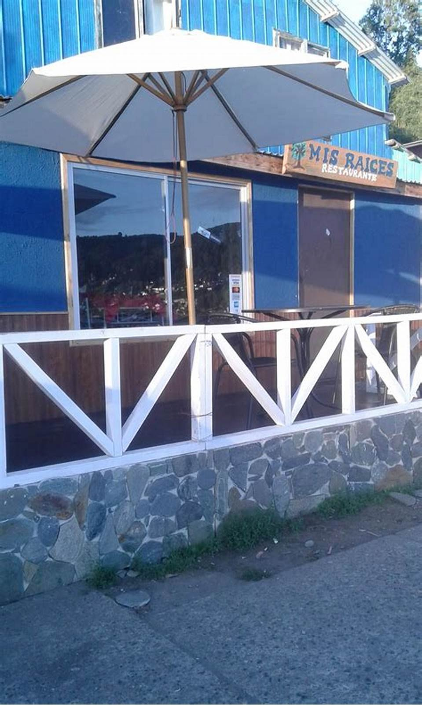

Restaurante · Los Molinos, costa de Valdivia
El mar no
tiene carta
fija
Lo que hay depende de la época, de la veda y de si salió el bote. Nadie lo dice por escrito, así que la gente llama para preguntar —o no viene. Acá está el calendario.
- reseñas en Google
- 219
- página propia
- por confirmar
La pregunta de todos los días
¿Qué hay
del mar hoy?
Una fila por producto. Lo que se ve cerrado es su calendario: doce letras, un mes cada una. Se abre la fila para leer el detalle.
- es su temporada
- hay, pero no es su mejor época
- manda la veda
- falta confirmar
-
Chorito EFMAMJJASOND todo el año
Es de cultivo, así que no depende de la suerte del día: hay todo el año. Lo que sí cambia es cuánto rinde la carne según la época —después del desove el chorito queda más flaco y se nota en el plato.
falta: en qué meses lo prefieren ustedes — el que compra sabe cuándo viene mejor, y decirlo es exactamente el tipo de dato que hace volver a un cliente.
-
Cochayuyo y luche EFMAMJJASOND verano
Las algas se sacan a mano en las bajamares grandes del verano, cuando la roca queda al descubierto. Por eso la temporada es de noviembre a marzo: no es una decisión de la cocina, es cuándo se puede llegar a la piedra.
falta: si trabajan con recolector de la zona — si el alga es de acá y tiene nombre y apellido, eso se dice y vale más que cualquier foto.
-
Loco EFMAMJJASOND manda la veda
El loco no se rige por temporada sino por veda: sale cuando hay apertura autorizada en un área de manejo, y el resto del tiempo no hay. Así de simple y así hay que decirlo.
falta: si este año les llega y desde cuándo — las fechas de apertura las fija la autoridad y cambian, por eso esta página no publica ninguna. En veda se respeta la veda.
-
Macha EFMAMJJASOND manda la veda
Igual que el loco: hay veda y cambia según la zona y el año. Un restaurante que dice de frente «hoy no hay porque está en veda» gana más confianza que uno que sirve sin explicar de dónde salió.
falta: confirmar los meses que corresponden a esta zona — no se inventan.
-
Erizo EFMAMJJASOND falta
Tiene veda reproductiva y las fechas cambian según la región. Esta página deja el calendario en blanco a propósito: publicar meses equivocados sería peor que no publicar nada.
falta: cuándo lo tienen ustedes — con eso la fila se llena en un minuto.
-
El pescado del día EFMAMJJASOND según el bote
No depende del mes: depende de si el mar dejó salir esa mañana. Hay días de invierno con mejor pescado que en pleno enero, y semanas de temporal en que sencillamente no hay.
Ésta es la fila que conviene actualizar: una línea escrita en la mañana —«hoy hay congrio»— vale más que toda la carta. falta: definir quién la escribe
Por qué esta página no publica fechas de veda. Las vedas las fija la autoridad, cambian de año en año y de zona en zona. Una página con fechas viejas hace que el cliente llegue a pedir algo que no puede haber. Por eso acá se dice lo único que no caduca: en veda se respeta la veda, y lo que hay hoy lo confirma el local.

La foto que ya tienen y explica el lugar
La terraza da a la calle, y la calle da al mar
Los Molinos es un camino angosto entre el cerro y el agua, y quien maneja por ahí decide en dos segundos dónde parar. Esta terraza con quitasol es lo que se ve desde el auto, y no está en su ficha de Google. Subirla es gratis. Lo otro que falta —y vale más— es la foto de lo que se ve DESDE la terraza: eso no lo puede poner ninguna imagen prestada.
Lo segundo que preguntan
La mesa
con vista
Alguien que maneja hasta la costa no viene sólo a comer: viene a comer mirando. Y eso, que es la mitad del argumento, hoy no está escrito en ninguna parte.
- Qué se ve desde la mesa
- falta: describirlo en una línea No hace falta adornarlo. «Se ve el mar y la bahía» ya es más de lo que hay hoy. Lo que no se puede es inventarlo: si la vista es parcial, se dice parcial.
- Cuántas mesas tienen vista
- falta Si son pocas, decirlo hace que la gente reserve en vez de llegar y encontrarlas ocupadas.
- Si hay terraza y si sirve con viento
- falta En la costa el viento decide. Una línea honesta —«la terraza se usa cuando el día acompaña»— evita una reseña mala.
Cómo llegar
- Dirección exacta
- falta Los Molinos es chico, pero el que viene de afuera necesita el punto en el mapa, no el nombre del pueblo.
- Cuánto se demora desde Valdivia
- falta Este dato no lo pongo yo. Un tiempo de viaje inventado es la clase de error que se paga con un cliente enojado llegando tarde a su reserva.
- Dónde estacionar
- falta En verano, en la costa, es una pregunta real.
Reservar
Diga cuándo y cuántos son: el mensaje se arma solo.